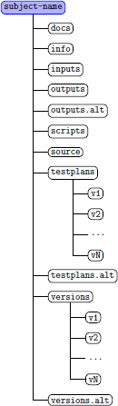
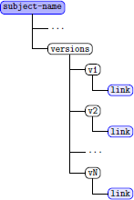
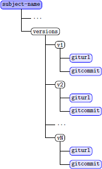
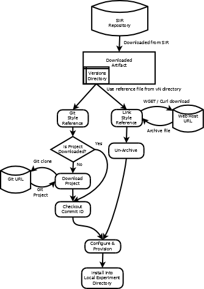

Concise Testing Objects Handbook
Table of Contents
1. Overview
The concise testing object packaging is intended for use by a larger SIR object. Larger testing research objects are difficult to download in a reasonable amount of time. The concise object significantly reduces the download time by not providing the source code within the packaging. Instead, the source code is referenced using Uniform Resource Locators (URLs) that can be used to download the source code for each version of the object.
Concise testing objects can be packaged in two ways. In the most basic form the URL for each version is used to download the source code collection for that version from the web host specified by the URL. In this Link packaging style each version is referenced using URLs that direct a file transfer using the HTTP GET mechanism of the web. Once downloaded, this version's source code collection can then be used in experiments.
In the second, Git packaging style, the concise testing object uses a Git distributed version control host, e.g. github.com, to provide the source code collection as a Git project. With the Git packaging style an object (Git project) only needs to be downloaded (cloned) once. Once the Git project has been downloaded/cloned the source code can be changed to a specific version of the object source using Git checkout. In this way, using Git objects provide a highly efficient way to provide the source code of a subject.
2. Object Organization
The standard SIR object directory tree format is depicted in Figure 1.
|
 |
Objects provided by the SIR all conform to this standard layout. Normal SIR objects place source code under the versions or versions.alt directory separated by version directories named v1 through vN with N as the final/last version number of the provided versions of the object. The testplans and testplans.alt directories contain the test suites that apply to each version. If tests are applicable to specific versions subdirectories using the same version naming convention (v1 through vN) are used. Test suites that utilize test frameworks should limit the number of copies that the framework is included within the directory structure. This can be done by providing a separate directory under testplans or testplans.alt for containing the test framework. Build scripts may also be provided within the version subdirectories to facilitate creating the test suites using the framework. The usage of the other directories provided within this standard SIR object layout is described in the Concise Object Directory Specification. |
The URLs used by concise objects are stored in files located under the versions directory within the object.
|
 |
Each version of the object has a corresponding subdirectory under the versions directory named v1 through vK. Under each of these directories a file containing the URLs is provided. The name of the file differs depending upon how the source code collection is provided. For objects provided as archive files, the file name is link. Within the link file are URL values, one per line in the file. Each URL is a different location that provides a full copy of the source code collection for that version. Providing multiple URLs in the link thus provides redundancy. However, you typically will use only the first link in the file to download the source code collection. The installation script provided within the scripts directory will typically use the top value in the file to perform the download for you. |
|
 |
If the concise object uses a Git host to provide the source code collection, the subdirectories under the versions directory will contain two files, giturl and gitcommit. The giturl file is similar to the link file in that one or more Git URLs are provided, each being a different web location that provides the Git project for the concise object. The gitcommit file contains a Git commit identifier, which is a 41 character hash value that uniquely identifies the version of the source code for that object version. |
3. General Object Setup
After downloading a concise packaged object the directory structure provided will contain the source code link files for each version along with the test suites that apply. As with other SIR objects you will need to set the experiment_root variable within your Linux/Mac OS shell environment. The experiment_root variable is used by installation scripting to indicate where the object is located within your filesystem heirarchy.
4. Usage and Installation
Concise packaged objects in the SIR are provided with shell scripts to automate the installation process. These scripts are located within the scripts directory of the SIR object packaging. The scripts provide capabilities to configure objects during the automated installation process. The following steps should be followed:
- Modify the config.sh file with setting specific to your system
- Execute the install.sh shell script to perform the installation
The first step to modify the config.sh needs to be only once. All
installations done using the install.sh shell script will
use the values referenced to configure the object to your system.
Figure 4 is a graphical representation of the procedure for installing these objects. Note that how the process differs when installing the Link and Git packaging styles.
|
 |
The Modification and customization of the installation scripts provided is expected and encouraged. Using the existing installation script install.sh as a guide you can add tasks to the installation phase, e.g. instrumentation, that are not done in the existing script. Similarly, you can remove tasks from the script that you do not want done at download and version selection time. The functions.sh provides several functions used by the installation script to automate aspects of the installation process. Many subjects also have ancillary script files provided for additional tasks like database server setup and subject configuration file initialization. Manual installation of concise packaged objects can also be done. To manually install a version of a concise object you will use the curl or wget shell command to download the version using one of the URLs contained in the link file. Typically the first link found in that file is sufficient, if that link is non-functional one of the secondary links provided in the link file may provide the version source code. We make every attempt to provide reliable source availability through the first URL listed in this file. |
Using curl or wget to manually download a object should be done from within the source directory of the object directory tree. You may however wish to have local copies retained of the version archives after downloading. If so, we recommend copying the archive into the version subdirectory under the versions or versions.alt directory of the object. Doing this can improve the installation time if you intend to repeat experiments with that version. An example of manually downloading version 1 of a object from a shell session (with a current working directory of the source directory of a object) would be:
curl -so dload.zip `head -1 ../versions/v1/link | tail -1`
The shell escape of `head -1 ../versions/v1/link | tail -1`
extracts the first URL from the link file for version 1 (v1)
and puts the downloaded object into a file name dload.zip.
The use of Zip to archive the source code collections is not required
and some may be packaged using the tar and gzip format.
You can determine the file format by inspecting the value within the
link file where the archive type is defined by the filename
part at the end of the URL, a .zip file suffix indicates
a Zip archive and a .tar.gz suffix indicates a tar/gzip
archive. Once downloaded you will then unbundle the archive into the
source directory using the appropriate unzip or tar --gunzip
command syntax.
If you are manually installing a object using a Git hosted project, you will use the git clone command with the Git URL contained within the giturl file found under all versions of the object. Git project objects all have an identical Git URL because the version is selected using the git checkout command and the value from the gitcommit file. Using a Git hosted project from the SIR repository requires installation of the git tools package on your system. We recommend cloning the Git package into the source directory. An example of manually cloning a Git project into the source directory for version 1 would be:
git clone `head -1 ../versions/v1/giturl | tail -1`
The shell escape of `head -1 ../versions/v1/giturl | tail -1`
will select the first Git URL from the giturl file for version
1 of the object. The clone operation will result in a copy of the
object's Git project being placed into the same directory where
the command was executed, in the example case that would be the source
directory. The cloned version will be the final version in the series
of versions used by the object and containing the most up-to-date (latest)
version of the Git project. To manually select an earlier version,
for example version 1, you must change directory (cd) into the git project and
execute the command:
git checkout `cat ../../versions/v1/gitcommit`
This will use the Git commit identifier for version 1 to select the
source code used in the experiment for version 1. The shell escape
performed extracts the commit identifier and provides it as input to the
git checkout command. Once completed, the Git project
now reflects the source code used in the experiment for version 1.